SEIYUCOM000X，框架再调你的个别项目。第 6 章才是日常工作。
建议学习顺序
| 章 | 对照录像 | 要学会什么 |
|---|---|---|
| Day1 操作 | Day1 前半 | 登录、Designer、脚本 / 项目 / 服务、橙色数据流与黑色进程流 |
| Day1 三个演示 | Day1 后半 | CSV 汇总、0 件报错、文件触发器 |
| Day2 框架 | Day2（和教材差别最大） | SEIYUCOM000X、戻り値 0 / 1–254 / 255 / -1、if_master |
| Day3 测试 | Day3 前半 | 调试、断点、测试引数，三条路径都跑到期望结果 |
| Day3 发布 | Day3 后半 + リリース手順書 | 指定最新版下载、上传后重新服务注册、差分导入 |
| 真实接口 | 日常工作 | 台账取号 → 8 步。不要停在 DEMO |
| 命名规则 | ガイドライン P.12 | 接口 ID / 项目 / 脚本 / 资源 / 触发器怎么起名 |
培训练习场
库 SAMPLE_PROJECT
工作目录 /data/DSSROOT/DEMO/（Windows 上是 F:\DSSROOT\DEMO\）
卡住时
选中组件按 F1
帮助里有例外和限制 → HULFT FAQ → セゾン技术支持。产品名填 DataSpider Servista 4.4 (x64) AP3，SP A00050。序列号只在ガイドライン P.122。
对照两份 PPT
日常顺序以《DSS開発の流れ》为准。细则回ガイドライン页码。口令不抄进本页。
| 要查什么 | ガイドライン | 開発の流れ |
|---|---|---|
| 框架 / 戻り値 / 主数据 | P.22–31、P.50–56 | 西友フレームワーク |
| if_master 列与登记 SQL | P.27、P.115–118 | if_master登録 |
| 触发器 / 命名 | P.12、P.31、P.112–114 | トリガー作成 |
| zip / 服务注册 / 共享 | P.105–111 | デプロイ |
| 用户 / 全局资源 / Azure / SFTP | P.32–35、P.58–63 | — |
| 三套 URL、GCS 控制台 | P.105 | 第 2 页 |
配套：Day1/Day3 PDF、開発ガイドライン v3.2、《DSS開発の流れ》、リリース手順書 v1.0。Markdown 原文在同目录 DataSpider新人使用手册.md。截图来自セゾン教材 PDF（Studio 实操画面）；录像文件本机已不在，无法从 mp4 再抽帧。
DataSpider 是 GUI 的 EAI：Studio 里画脚本，Server 上编译成 Java 再跑。
四块能力
| 块 | 做什么 |
|---|---|
| Adapter | 读/写 CSV、Excel、DB、FTP、REST、固定长等 |
| Mapper / Converter | 字段变换、过滤、日期、拼接（约 140 个逻辑图标） |
| Studio | 开发、运维、看日志 |
| Trigger | 到点、文件落地、JP1 等自动启动 |
DSS 在西友数据联动里干什么
DSS 是系统间 EAI/ETL，不是分析仓。选型见ガイドライン P.18。高 Tier 用 DataHub；分析积蓄用 Databricks；DSS 适合中低 Tier 的文件 / DB 联动。
| 方案 | 主要用途 |
|---|---|
| DataHub | 高 Tier、要冗余的文件联动 |
| DataSpider | 系统间文件 / DB |
| Databricks | 积蓄、分析。写仓走 ADLS（MS0007） |
| Lakehouse Federation | 只参照外部最新状态。注意源库负荷 |
ADLS：一 IF 一容器，外部用 SFTP，约 30 天后自动删。数据质量：先约定编码、全角半角；乱码当损坏处理。
三个名词不要混
| 词 | 含义 |
|---|---|
| 脚本 | Designer 里画的源码 |
| 项目 | 相关脚本的打包；下载、上传、服务注册都以项目为单位 |
| 服务 | 项目登记到 Server 之后，才能被触发器、其他脚本、ScriptRunner 调用 |
Studio 窗口
- Designer：画脚本和 Mapper
- Control Panel：用户、任务、全局资源、挂载
- Explorer：逻辑文件系统（脚本写这里的路径，不是
C:\） - My Service / Trigger / Log：已注册服务、触发器、日志
绿三角 = 通常执行。虫子 = 调试执行。
两条线
| 线 | 样子 | 规则 |
|---|---|---|
| 数据流 | 橙色虚线 | 指定输入后自动出现，可一对多 |
| 进程流 | 黑色实线 | 必须手拉 Start→…→End；一个图标一条出线 |
没拉到 End 的脚本不能当完整处理。
登录后主画面
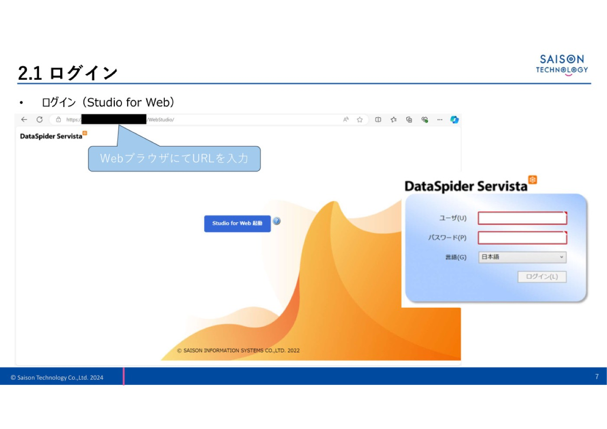
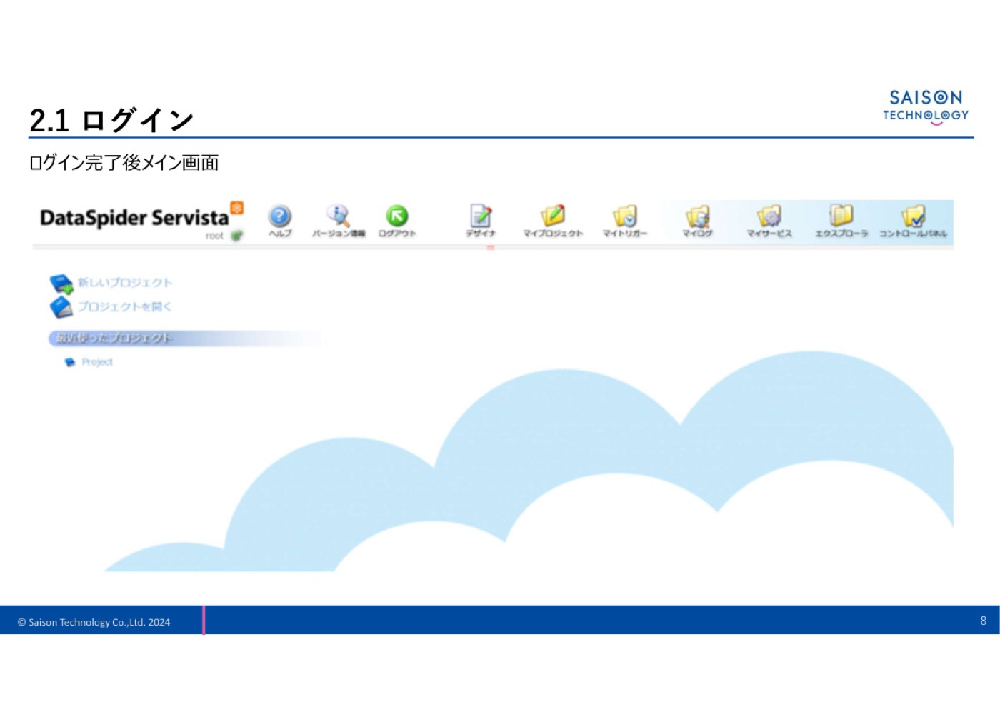
新建 / 打开项目
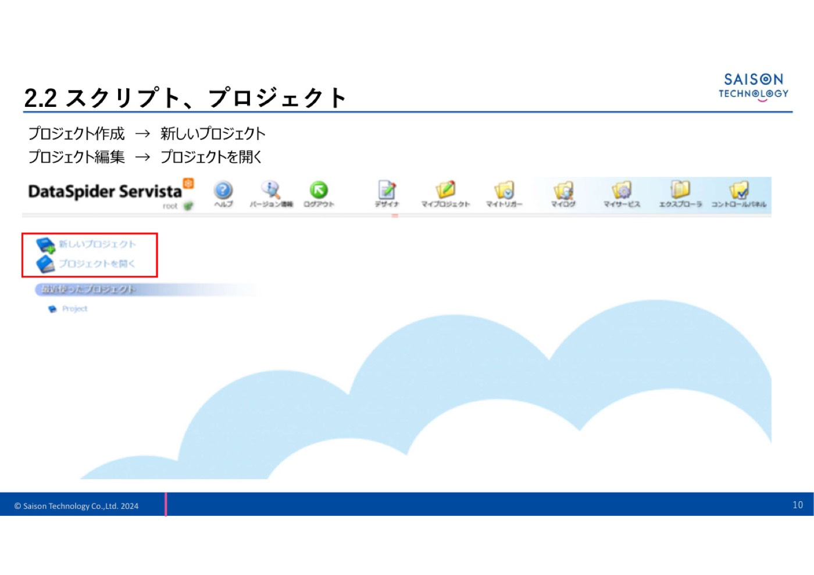
在 Designer 里画脚本
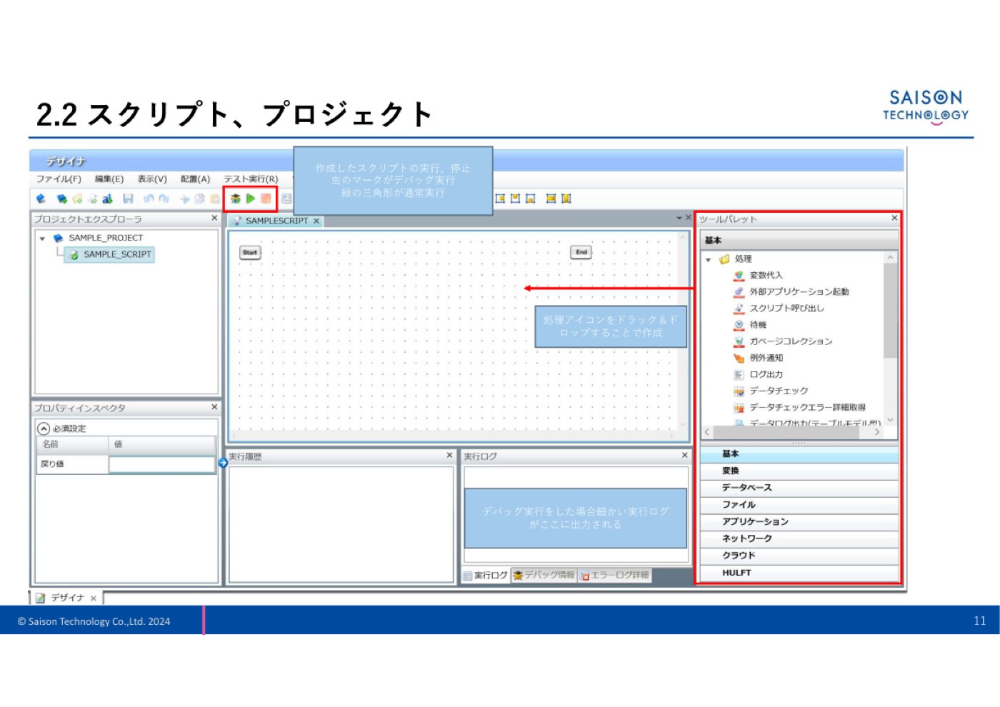
版本、共享、挂载
- 每次保存都留版本，可还原，可出版本比较报告。
- 没权限看不到别人的项目。共享：マイプロジェクト → プロパティ → 共有。
- 一般用户只能看到自己当「触发器所有者」的触发器。
- OS 目录先挂到 DataSpider 文件系统，脚本才不绑盘符。
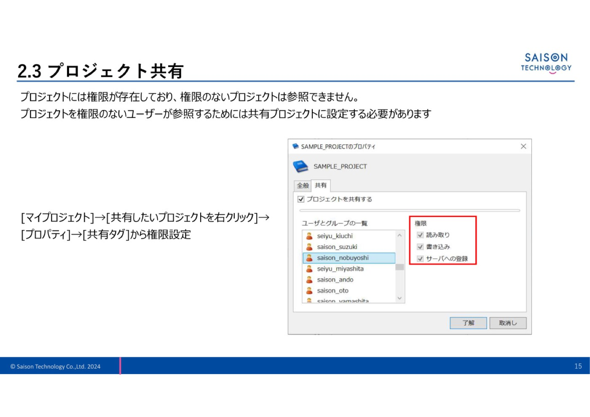
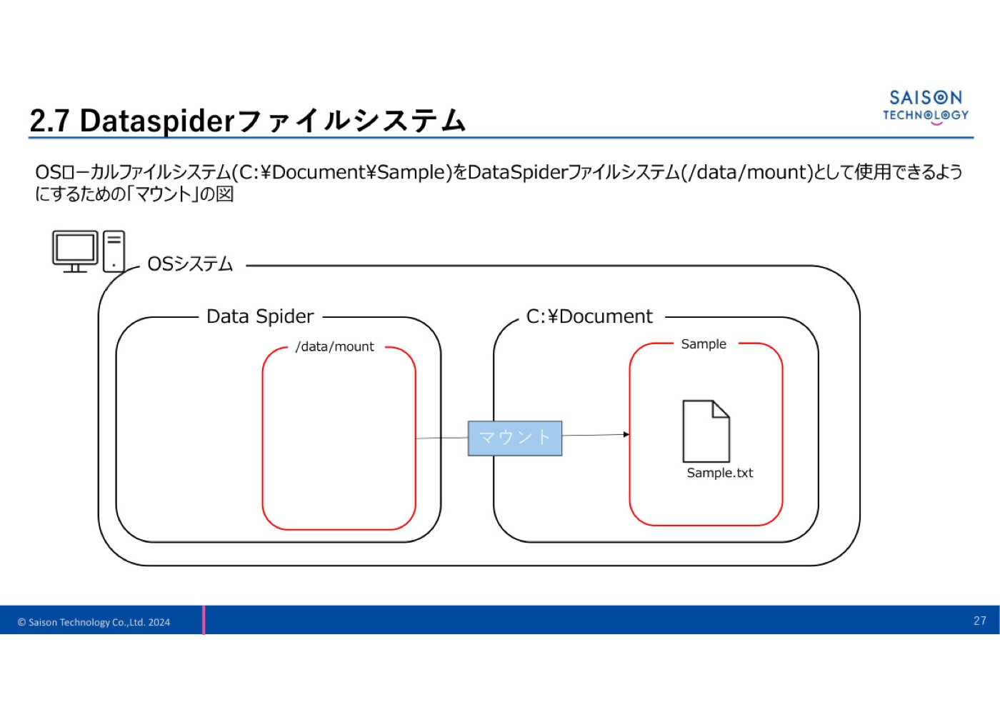
C:\Document\Sample 先挂成 /data/mount，脚本只写 DataSpider 路径。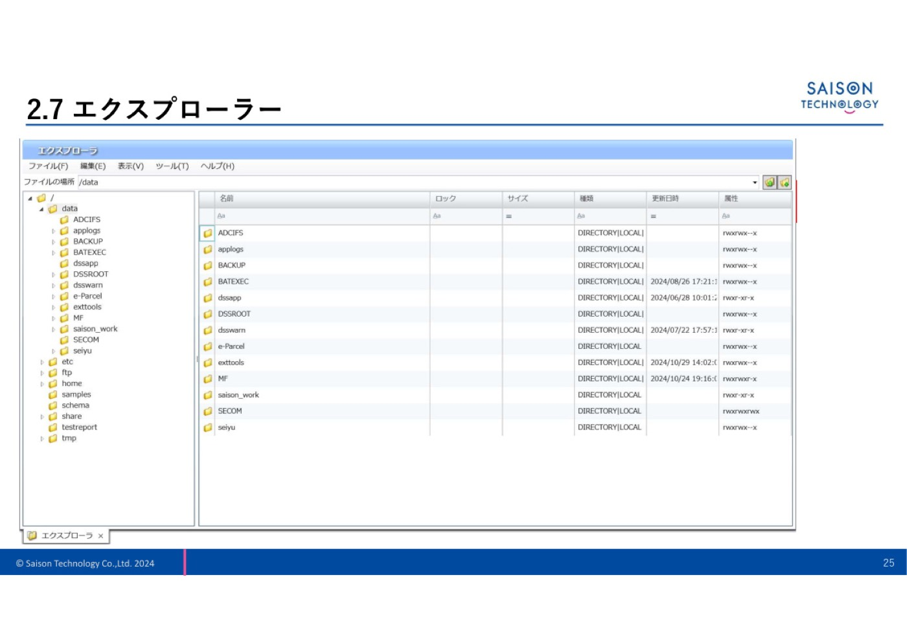
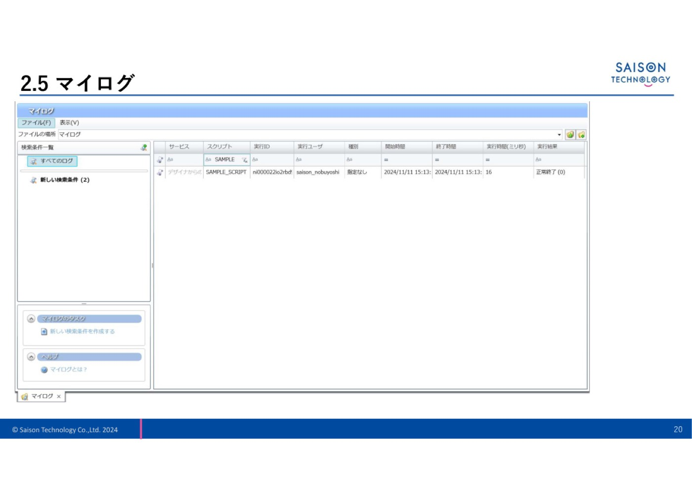
本环境已确认的适配器
| 状态 | 适配器 |
|---|---|
| 已购 ● | Salesforce、Microsoft Azure、SQL Server（选择式）、固定长、FTP、REST |
| 标准 〇 | JDBC、CSV、Excel、XML、HTML、文件操作、Mail、Thunderbus、HULFT |
表上没有 ●/〇 的（Oracle、GCP、Box、SAP 等）不要默认当成可用。HTML 读取走 Web Adapter。CSV：编码 Windows-31J，第一行当表头。
Day1 三个演示
① CSV 转换集计
输入 OrderList.csv（受注日、支店、ケース数、入り数、容量、商品名、受注_ID）。按支店汇总发注数，写出 OrderList_total.csv。变换放 Mapper，不要用 IF/循环逐行加工。
② 0 件当错误
只有表头、没有数据行。不写输出文件，主动结束成错误。接到框架后，这就是警告或 255。
③ 文件触发器
把 CSV 放到输入文件夹 → 自动跑① → 结果进输出文件夹。触发器挂的是已注册服务，不是未登记脚本。
服务注册：项目右键「プロジェクトをサービスとして登録」。画面会比较源项目和目标服务的脚本。
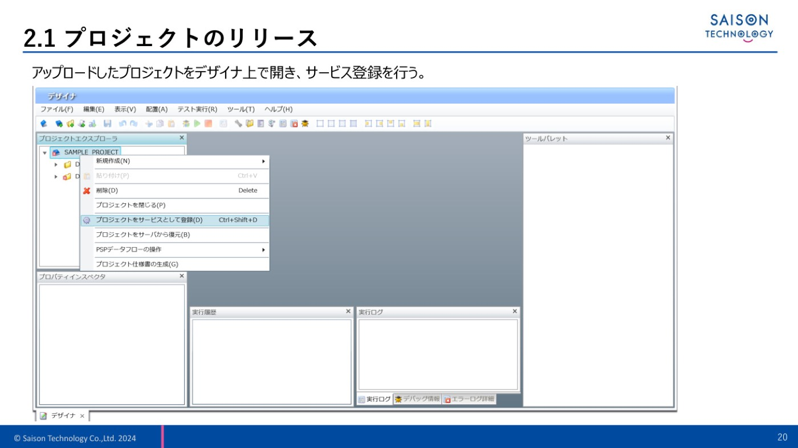
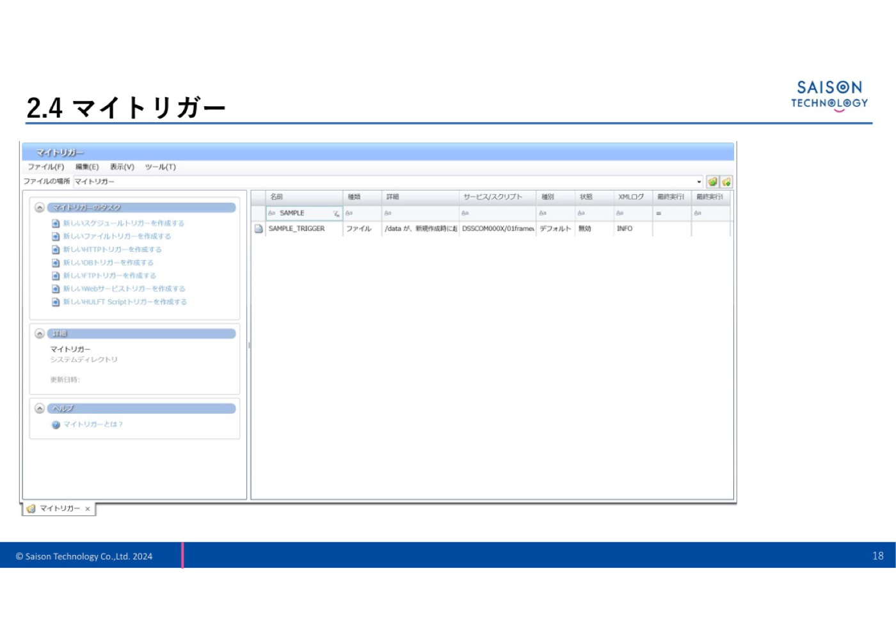
SEIYUCOM000X / 01frameworkBatch。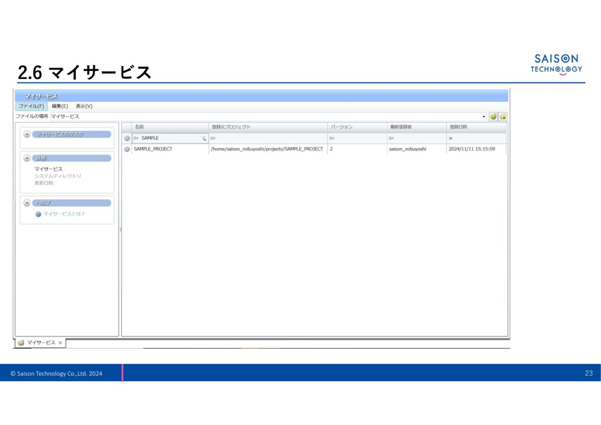
SEIYUCOM000X / 01frameworkBatch。
调用链
调度触发器 / JP1 / ScriptRunner
↓
SEIYUCOM000X / 01frameworkBatch ← 只用，不改
↓
SEIYUCOM001X
01getInterfaceInfo 读 if_master、param_master
调个别项目（你的 IF）
02outputLog / 03sendMail
↓
个别项目 = 接口 ID，只写业务
| 项目 | 角色 | 能改吗 |
|---|---|---|
SEIYUCOM000X | 入口 01frameworkBatch | 只用，不改 |
SEIYUCOM001X | 读主数据、调个别脚本、写日志、发邮件 | 禁止修改 |
SEIYUCOM002X | ADLS 路径切割 | 可用 |
SEIYUCOM003X | 备份清理（每天 0 点） | 了解即可 |
| HOUSEKEEP | 本地备份清理 | 非推荐。备份放 Blob AZURE_STR_DSS |
| 接口 ID 项目 | 个别处理 | 这里写业务 |
邮件由 03sendMail 发。发信以台账为准，常见 no-reply-HR-EAI@seiyu.com 或 no-reply-Seiyu-EAI@seiyu.com。JP1 用 C:\Temp\scriptrunner.xml，第一参数传 if_id。
四条收口（Day2 核心）
戻り値设在 End 组件的属性检查器里，不是脚本属性随便写一个数。
| 分支 | 你的脚本怎么结束 | 框架做什么 |
|---|---|---|
| 1 正常 | End 戻り値 0 | 记成功日志后结束 |
| 2 警告 | 戻り値 1–254（演示：CSV 只有表头 / 0 件） | 警告邮件 + 警告日志 |
| 3 可控异常 | 戻り値 255，并且填了 out_* | 异常邮件 + 异常日志 |
| 4 未捕获 | Exception / 没 catch | 框架 catch 后发异常邮件。戻り値实际是 -1 |
警告/异常用「警告变量设定」「异常变量设定」填 out_component_name/type、out_message_*、out_error_*。邮件后半段例如：
FILE0001E|java.io.FileNotFoundException|/data/DSSROOT/DEMO/INPUT/OrderList.csv|CSV読取
改写口径：正常 = 跑完（0）；警告 = 0 件（1–254）；异常 = 读或写失败（255 + out_*）。
if_master
库 DSSSEIYU。改前按手順书 3.1 备份。发版常用同 if_id DELETE 再 INSERT（P.117）。
列名用全称：if_id / if_name / service_name / script_name / from_mail_address / to_mail_address / cc_mail_address / bcc_mail_address / mail_title_header / tier
to_mail_address 必须含 isd_support_desk@seiyu.com
DEV：DHUB-DB-DEV:1433，DBeaver 也可，账号见 P.103（口令不写本页）。STG/PROD：RDP + SSMS，SeiyuServerStg.seiyu.com / SeiyuServerPro.seiyu.com。
param_master
IF_ID + param_no + param_value，读入后到 param1–param20。
路径、文件名尽量用这些参数，不要写死在图标属性里。
触发器怎么挂（三环境相同）
| 字段 | 值 |
|---|---|
| 服务 | SEIYUCOM000X |
| 脚本 | 01frameworkBatch |
| 变量 if_id | 本接口 ID |
| 执行用户 | exec_SY |
| 状态 | 登録后应为「待機中」 |
SEIYUCOM000X / 01frameworkBatch / 变量 if_id → 一览「待機中」。执行用户 exec_SY。SQL Server（Day2 后半）
表读/写、検索 SQL、更新 SQL（?{列名}）、ストアド、ローダ。连接例 COM_SQLServer2022。练习库 DHUB-DB-DEV / DSSROOT。
DBデモ1（CSV→表，带事务）
Transaction → DELETE → csv_read → mapping → テーブル書き込み → COMMIT
process_date 用「現在日時」。大件数打开「大容量データ処理」，不要全进内存。跨多步回滚用事务图标。
测试
每条条件分支都要有期望结果（录像里的 ①②③），不要只跑通主路径。
| 手段 | 怎么用 |
|---|---|
| 通常执行 | 绿三角。快，细节日志少 |
| 调试执行 | 虫子。有执行历史和日志，可逐步看 |
| 断点 | 图标右键「ブレークポイントを設定/解除」 |
| 测试引数 | 脚本右键 → 属性 → テスト実行 |
| 调试信息 | 看运行中的脚本变量 |
| 错误日志 | 用消息代码去 Help 搜 |
DEBUG 日志在 Designer 里可能被截断，去 My Log 看全文。生产日志用 INFO。
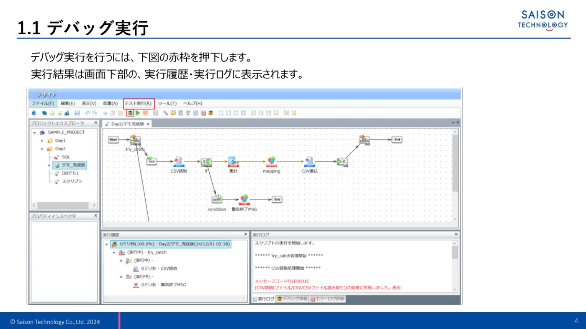
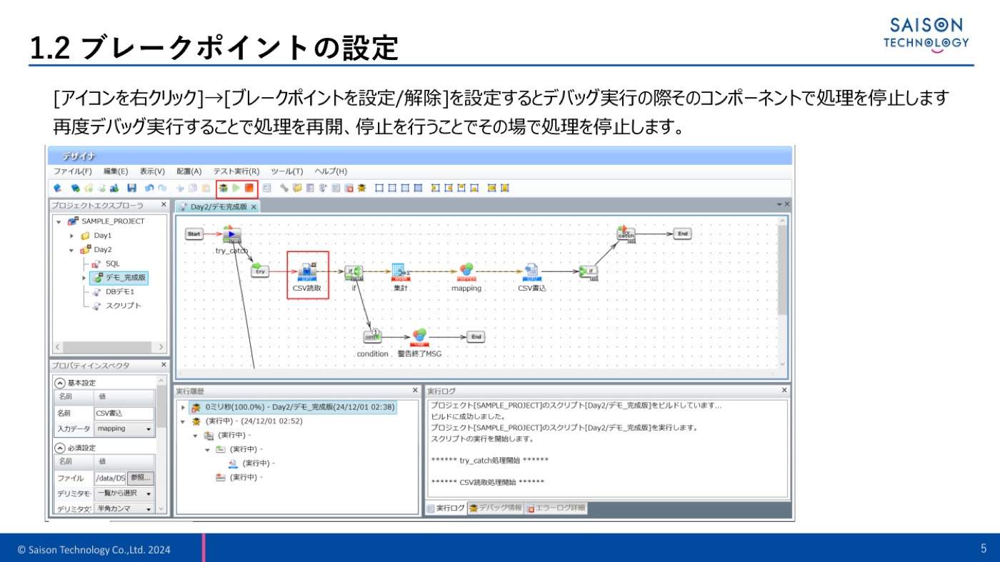
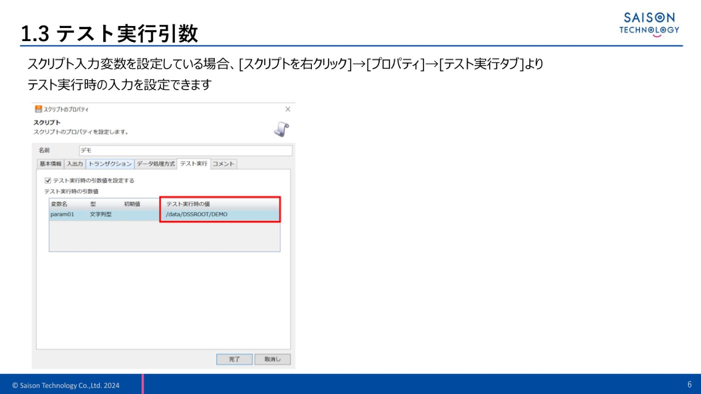
发布（リリース手順書 v1.0）
5.1 项目 zip
- マイプロジェクト → ローカルへダウンロード。勾选「バージョンを指定してダウンロード」，选数字最大的最新版。
- 目标：ローカルからアップロード。上書き = 作为现有项目最新版；换名 = 另起项目。
- 打开 → 服务注册（服务名 = 项目名）→ マイサービス确认。
- zip 不带共享。STG/PROD 上传后：共有 → SY 组读取。一览要能看到「共有」。
- 脚本写 Explorer 文件夹时，给
exec_SY加写入组权限（P.110）。
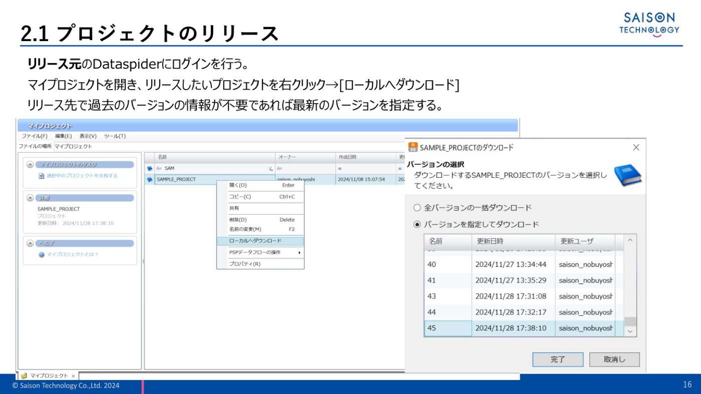
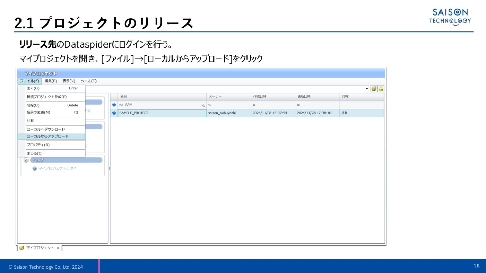
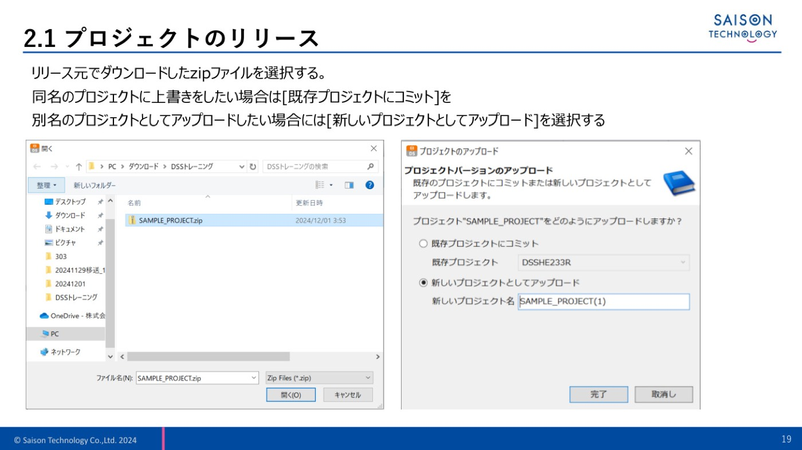
5.2 非项目（サーバ移行）
- コントロールパネル → DataSpiderServerの設定 → サーバ移行。
- 导出先「全て解除」，只勾本次要搬的。
- 导入不要去掉「プロジェクトの差分インポート」和「環境変数の差分更新」。去掉会整表覆盖。
- 导入后重启 Windows 服务
DataSpiderServista。 - 同名时：服务/触发器/全局资源覆盖；环境变量和项目文件可跳过。用户逻辑冲突会改成
name_1。
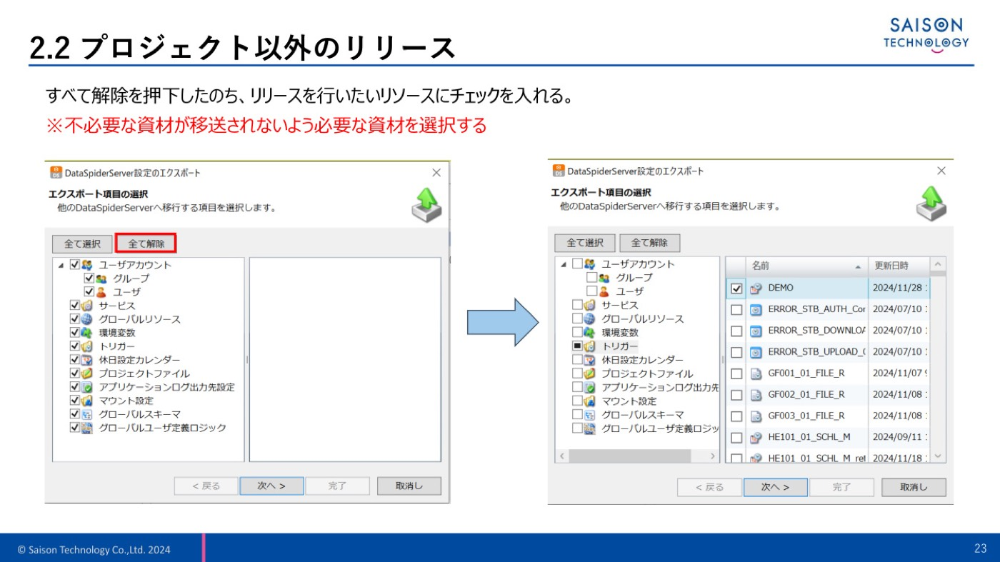
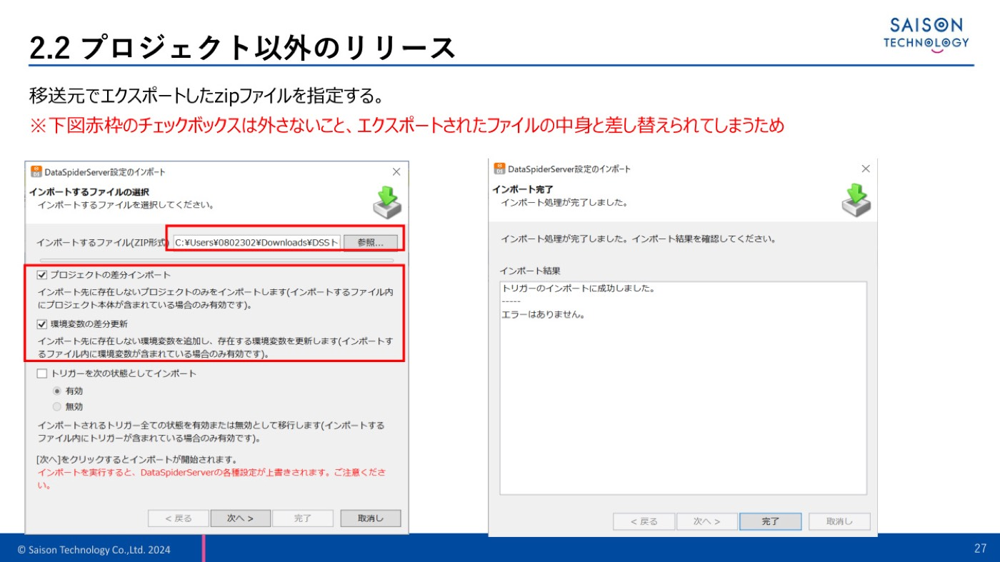
5.3 系统表
只搬项目不够。改 if_master 前必须备份。
| 方式 | 步骤 |
|---|---|
| CSV 备份 | SELECT 对象表 → 結果に名前を付けて保存 |
| 脚本备份 | スクリプトの生成，详细设定选「スキーマとデータ」 |
| 追加 | 上位200行の編集 → 末行 * → 再用 SQL 确认 |
| 修正 / 删除 | 先 WHERE 筛行，再改或删，最后 SQL 确认 |
申请、Owner、设计书
AppG 申请 → DataG 受付并预审发 IF ID → 开发测试 → SDP リリース；监视约提前 1 周找 ITSM。台账记初回 / PRO / ITSM 运用开始 / 稼働日。监视要启动时刻、L3、重要度。
Owner 是联动源侧，负责脚本和数据内容。相关 IF 由起点 Owner 统筹。申请种类：インターフェース、IntakeForm（Databricks）、DSS 设定、全局资源、账号。设计书：シーケンス図 + マッピング定义书（P.10–11）。
取号
从 SEIYU-TRIALインターフェース管理台帳.xlsx → DSSインターフェース台帳 拿 IF ID（開発の流れ第一步）。格式 FROM6_TO6_SEQ3，例如 AM0002_MS0007_001。项目名 = 接口 ID。
DEV → STG → PROD（8 步）
复制现有个别项目来改，不要从空白重写框架调用。
| 步 | 做什么 | 硬性规则 |
|---|---|---|
| 1 | IF ID | 台账已取号 |
| 2 | 建项目 | 项目名 = 接口 ID |
| 3 | 脚本 | 复制现有脚本再改。01 + 驼峰，例如 01updDelDate。只写个别处理 |
| 4 | Explorer | /seiyuroot/<IF_ID>/，给组加访问权限 |
| 5 | 服务注册 | 服务名 = 项目名。改脚本后必须重新注册 |
| 6 | 触发器 | 只调 SEIYUCOM000X / 01frameworkBatch，参数 if_id，用户 exec_SY |
| 7 | if_master | to_mail_address 含支持台；改表前备份。P.115–118 |
| 8 | 测试后升环境 | STG/PROD 走 SDP。画面 P.105–111 |
资源申请 mls_ISDDataPlatform@seiyu.com（用户申请 CC Director）。件名例：【Dataspider】ユーザー作成依頼 / 【Dataspider】グローバルリソース作成依頼 / 【Dataspider】Azureストレージ接続設定依頼。SFTP 密钥路径 /data/SSH/<Intake>/xxxxx.ppk。DEV 全局资源可自建；STG/PROD 由 Data 团队建箱。
个别脚本默认骨架
抄 2026-05-13 实演 CM0010_IF0079_006 / 01OutputData：
try/catch
→ delete 工作区 /* # /seiyuroot/<IF_ID>/
→ 源抽出（検索系 SQL / CSV / SFTP …）
→ Mapper（日期、字段、过滤）
→ 写出业务文件 + 完了文件（如 ORDER_${file_date}.END）
→ 交件（GCS / ADLS / SFTP）
→ End 戻り値 0
catch → 异常变量设定 → End 255
GCS 连接 GCP_STR_DSS，桶 ods-seiyu-{dev|stg|prod}。控制台 console.cloud.google.com/storage/browser/ 下同名桶。路径常见 /<IF_ID>/${folder_date}/。备份用 Blob AZURE_STR_DSS，不要默认 /data/backup。
读 / 转 / 写
| 场景 | 用什么 | 注意 |
|---|---|---|
| DB 全表抽出 | テーブル読み取り | 全局资源可复用 |
| 带条件 / 复杂 SQL | 検索系 SQL 実行 | 向导生成后若手改 SQL，向导不能再编 |
| 字段变换、过滤 | Mapper | 先定输出 schema |
| 文件 JOIN | Merge | DB 侧优先用 SQL JOIN |
| 大量写入 | テーブル書き込み + 批处理 | 「キー一致行は更新」= upsert。86 万件批模式约快 30 倍 |
| 复杂更新 | 更新系 SQL 実行 | 不适配超大件数 |
| 固定长 EDI | 固定长适配器 + 向导 | 定义进全局资源 |
命名规则
完整表在「命名规则」页（ガイドライン P.12）。建项目前先对那一页：项目名 = 接口 ID，脚本 01+キャメル，触发器 _SCHL，ADLS 容器小写连字符。
对象怎么起名
| 对象 | 风格 | 规则 | 例子 |
|---|---|---|---|
| 接口 ID | アッパースネーク | FROM系统(6位)_TO系统(6位)_序号(3位)。系统 6 位用系统一览 | AM0002_MS0007_001 |
| 项目名 | 同接口 ID | 必须完全相同 | AM0002_MS0007_001 |
| 脚本名 | 两位序号 + キャメル | 同一项目内顺序编号 + 处理概要（英语或ヘボン式） | 01updDelDate |
| 常量 | アッパースネーク | 英语或ヘボン式 | FILE_NAME |
| 变量 | スネーク（小写） | 英语或ヘボン式 | file_name |
| 参数 | スネーク + 型前缀 | 输入 in_、输出 _out、入出力 io_ | in_file_name |
| 环境变量 | ENV_ + アッパースネーク | 英语 | ENV_RETRY_COUNT |
| 工作文件名 | スネーク（小写） | 脚本里普通文件 | file_name |
| 表名 | 前缀 + アッパースネーク | 主数据 M_、事务 T_ | M_FILE_SEND |
| ADLS 容器 | 小写 + 连字符 | 只能小写、数字、- | am0002-ms0007-001 |
| 固定长 / 可变长格式 | アッパーキャメル | FIX/VAR + READ/WRITE + 名称 | FIX_READ_Time |
| 全局资源（固定长定义） | 格式名 + 系统 | 格式名 + 系统 ID + 名称 + _01 | FIX_READ_MS0007_Test_01 |
| 全局资源（其余） | 协议_系统6位[_用户或 Intake] | Datalake 加 Intake。枝番可加 DB 名 | SFTP_AM0002_用户ID |
| 触发器 | 接口 ID + 种类 | 多种スケジュール：_SCHL_ + 3 位序号 | AM0002_MS0007_001_SCHL |
全局资源协议前缀
| 前缀 | 用途 | 例子 |
|---|---|---|
SQL | SQL Server | SQL_DSS_SEIYU_DB |
ORCL | Oracle | ORCL_CM0010_wknpsuser |
JDBC | JDBC（含读 Databricks / MS0005） | JDBC_AM0002_用户ID |
ODBC | ODBC | ODBC_AM0002_用户ID |
FTP / SFTP | 文件传输。SFTP 只用密钥 | SFTP_AM0002_用户ID、SFTP_MS0007_<Intake> |
REST | REST | REST_AM0002_用户ID |
MAIL | 邮件 | MAIL_AM0002_用户ID |
BLOB | Azure Blob | AZURE_STR_DSS |
同一源系统仍要拆全局资源 + 用户 ID。写 Databricks 走 ADLS（MS0007）；读走 JDBC（MS0005），不要开连接池。
触发器种类
| 识别子 | 种类 | 西友正式接口 |
|---|---|---|
SCHL | スケジュール | 常用。挂 SEIYUCOM000X / 01frameworkBatch |
FILE | ファイル | 培训演示用；正式仍挂框架 |
HULF | HULFT | 按台账 |
HTTP | HTTP | 按台账 |
WSDL | WEB 服务 | 按台账 |
路径：工作区 /seiyuroot/<IF_ID>/；SFTP 密钥 /data/SSH/<Intake>/xxxxx.ppk；GCS 常见 /<IF_ID>/${folder_date}/。
三套环境（2026）
日常用独立三套 WebStudio，不要沿用 2024「Staging 里放开发机」。
| DEV | STG | PROD | |
|---|---|---|---|
| WebStudio | dhub-dss-dev | dhub-dss-stg | dhub-dss-pro |
| 账号 | 个人账号 | exec_SY | exec_SY |
| IP | 10.22.214.244 | 10.22.214.164 | 10.22.212.164 |
| DB | DHUB-DB-DEV / DSSSEIYU，DBeaver 也可 | DHUB-DB-STG，RDP + SSMS | DHUB-DB-PRO，RDP + SSMS |
| GCS | ods-seiyu-dev | ods-seiyu-stg | ods-seiyu-prod |
当前单机，故障即停服。不定期 14:30–16:00 维护。高 Tier、窗口不能停的处理不要放 DSS。维护预告：Teams「データ利活用ポータル | Dataspider事務局からのお知らせ」。西日本 DR 不用于 DataSpider 切转。日常用 Studio for Web，不用 Desktop Studio。
会拖垮整台 DSS
明确不要做
- 改
SEIYUCOM000X/SEIYUCOM001X - 脚本硬编码密码、API Key
- 数珠つなぎ / バラマキ；从 Designer 调生产脚本
- Databricks 全局资源开连接池
- SQL Express 当数据库文件系统
- SFTP 密码认证（只用密钥）
- 生产日志 DEBUG / FINEST
- 把培训失败挂载
/data/Shared_test写进新脚本
PSP 约 1000 件一块并行。テーブル書き込み批模式 86 万件约快 30 倍。1 亿件级不要用 DSS 扛。卡住：My Log → コントロールパネル タスクマネージャ结束进程；不行就重启 DataSpiderServista。
Day1
Day2
Day3 + 真实接口
样板 IF：CM0010_IF0079_006
2026-05-13 田村实演。FROM CM0010 若菜 新店舗 → TO IF0079 TRIAL 存储。
| 项 | 值 |
|---|---|
| 脚本 | 01OutputData |
| Oracle | ORCL_CM0010_wknpsuser / WKNPSUSER / 例 WKNST_DAILYORDER |
| 工作区 | /seiyuroot/CM0010_IF0079_006/ |
| 顺序 | try/catch → delete /* → 検索 SQL → Mapper（file_date / folder_date）→ csv_write → ORDER_${file_date}.END → gcs_put |
资料来源
- ワークショップ Day1/2/3 会议录像（2024-11/12）
- ツール活用トレーニング Day1、Day3 PDF
- 開発ガイドライン v3.2、《DSS開発の流れ》、リリース手順書 v1.0
- 2026-05-13 Teams 实演（CM0010_IF0079_006）
2026-07-22 Teams「DSSについて」约 3GB、无字幕，未能逐句转写；环境 URL 以《DSS開発の流れ》为准。